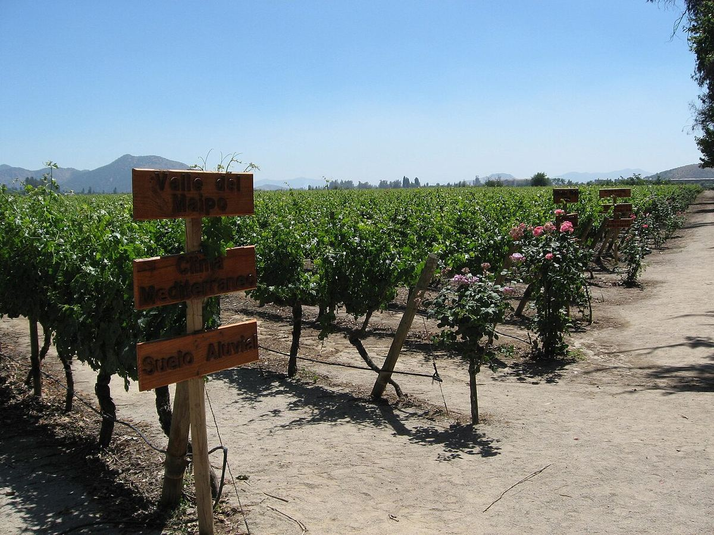

La vallée du Maipo, qui entoure Santiago, est le berceau de la viticulture chilienne moderne et la zone la plus associée au cabernet-sauvignon du pays. On y trouve beaucoup des domaines historiques fondés au XIXe siècle.

Photo: MattStabile01 at English Wikipedia · Public domain · Wikimedia Commons
Histoire
La proximité de la capitale explique le rôle central du Maipo dans l’histoire du vin chilien. Au milieu du XIXe siècle, des familles de l’élite de Santiago créèrent des domaines inspirés des châteaux bordelais, importèrent des cépages français et engagèrent des œnologues français. De cette époque datent des domaines emblématiques comme Concha y Toro, Santa Rita, Santa Carolina ou Cousiño Macul, certains dotés de demeures et de parcs historiques. Au cours des dernières décennies s’y sont ajoutés des projets consacrés aux vins haut de gamme, souvent avec des partenaires étrangers, comme Almaviva.
Géographie et climat
La vallée suit le cours du río Maipo depuis la cordillère des Andes jusqu’à la côte et fait partie de la région de la Vallée centrale. Le climat est méditerranéen, avec des étés secs et chauds et des hivers doux et pluvieux. La proximité des Andes influe beaucoup sur les températures : l’air froid qui descend de la montagne la nuit rafraîchit les vignes et prolonge la maturation.
Sous-zones
On distingue généralement trois secteurs. L’Alto Maipo, au pied des Andes, avec des zones comme Puente Alto et Pirque, entre environ 400 et 800 mètres d’altitude, est le plus frais et le plus réputé pour le cabernet-sauvignon. Le Maipo moyen, autour de Buin et d’Isla de Maipo, est plus chaud et plus plat. Le Maipo bas ou secteur côtier, vers Talagante et Melipilla, subit davantage l’influence du Pacifique. Les mentions Andes, Entre Cordilleras et Costa peuvent figurer sur les étiquettes pour refléter ces différences.
Sols
Dans l’Alto Maipo dominent des sols alluviaux et colluviaux caillouteux et pauvres, formés de graviers et de pierres issus de la cordillère, qui drainent bien et limitent la vigueur. Dans la vallée moyenne, les sols sont plus profonds, avec des argiles et des limons.
Cépages et styles
Le cabernet-sauvignon est le cépage emblématique : il donne des rouges aux fruits noirs et au cassis, souvent avec des notes de menthe, d’eucalyptus et d’herbes, à la structure ferme et au bon potentiel de garde. On cultive aussi le carménère, le merlot, la syrah, le cabernet franc et le petit verdot, qui entrent dans de nombreux assemblages de style bordelais. Les blancs jouent un rôle mineur, les zones côtières plus fraîches du pays leur convenant mieux. La croissance urbaine de Santiago exerce une pression sur certains vignobles historiques.
Beaucoup des domaines historiques de la vallée conservent leurs demeures, leurs anciens chais et leurs parcs, et plusieurs accueillent des visiteurs, ce qui fait du Maipo une destination œnotouristique facilement accessible depuis Santiago.
Vins · Vallée du Maipo
ROUGE
Viña Almaviva · Vallée du Maipo
Almaviva
Cabernet Sauvignon, Carménère, Cabernet Franc, Petit verdot, Merlot